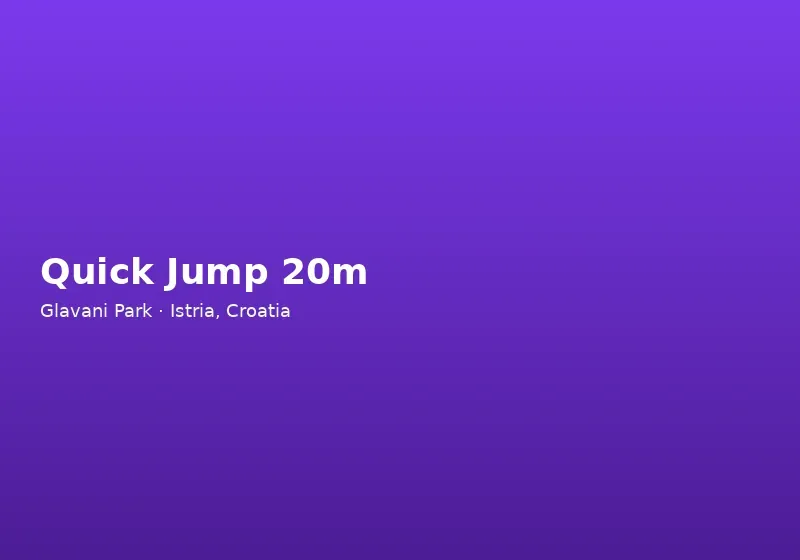

Naša sigurnosna filozofija
Adrenalin i sigurnost nisu suprotnosti — ovisni su jedan o drugome. Posjetitelji skaču s platformi i kače se na zipline jer vjeruju sustavima koji ih drže. U Glavani Parku to povjerenje zarađujemo vidljivim standardima: certificirana oprema, ponovljene obuke, prisutnost instruktora na svakoj stanici i kulturom u kojoj svatko može pitati prije nego što se odluči.
Na Glavani 10 između Barbana i Vodnjanja park svake sezone dočekuje tisuće međunarodnih gostiju — mnoge prvi put na visokim stazama ili ziplineu. Naš bilingvalni tim, uključujući instruktore na engleskom, daje prednost jasnoj komunikaciji jer nesporazum na visini rizik neprihvatljiv.
Sigurnosna kultura u Glavani Parku uključuje i educiranje posjetitelja — transparentne ploče s pravilima, vidljive inspekcijske rutine ujutro i otvorenu komunikaciju o vremenskim ograničenjima. Kada vjetar ili grmljavina približe se parku, aktivnosti na visini mogu se privremeno obustaviti; gosti cijene iskrenost umjesto nastavka rada u rizičnim uvjetima.
Standardi opreme i certifikati
Sva osobna zaštitna oprema u Glavani Parku zadovoljava europske CE zahtjeve za avanturističke parkove. To uključuje pune harnese koje prilagođava osoblje, kacige po mjeri, karabiner i spojnice ocijenjene za dinamička opterećenja te sustave usporavanja na atrakcijama poput Quick Jumpa s 20 metara.
Visoke staze koriste kontinuirani osigurač koji drži posjetitelje na sigurnosnoj liniji od trenutka napuštanja tla do povratka na platformu. Zipline kolica, platforme i mjesta slijetanja inspektiraju se prije dnevnog otvaranja. Ljudska katapulta koristi redundantne sigurnosne linije i zdravstveni pregled prije vožnje uz standardni harnes.
Oprema s istrošenošću izvan granica odmah se povlači iz uporabe — istog dana, ne na kraju sezone. Rezervna oprema drži se na lokaciji kako rad nikad ne bi kompromitirao kvalitetu.
Oprema proizvođača renomiranih brandova u adventure industriji redovito se zamjenjuje prema planu održavanja, ne samo kada se pokvari. Svaki incident — čak i blagi — dokumentira se kako bi se procedura poboljšala. Takav pristup odražava standarde koje očekujete od vodećeg parka u regiji i razlog zašto nas preporučuje Turistička zajednica Istre.
Obuka instruktora i nadzor na stazi
Svaku atrakciju vode educirani instruktori koji provode obuku na hrvatskom ili engleskom prema potrebi. Obuke pokrivaju harnes, provjeru spoja, pravila staze, signale za hitne slučajeve i upute specifične za aktivnost — pozicioniranje na visokoj ljuljački, polazak na ziplineu, očekivani osjećaj na Quick Jumpu.
Instruktori cijeli dan prate uvjete: vrijeme, umor sudionika, redove i funkciju opreme. Imaju ovlast zaustaviti aktivnost ako vjetar, kiša ili zdravlje sudionika izazovu zabrinutost. Minimalna visina, težina, dob i zdravstvena ograničenja za ekstremne atrakcije dosljedno se provode.
Grupni posjeti — školski izleti, korporativni događaji i rođendani — dobivaju dodatnu koordinaciju kako omjeri nadzora i odabir aktivnosti odgovaraju profilu grupe.
Roditelji često pitaju o razlikama između igrališta i visoke staze — ključna je kontinuirana veza s uredajem i profesionalni nadzor. Naš tim rado objašnjava mehanizme prije nego djeca napuste platformu, što smanjuje anksioznost i povećava uživanje. Sigurnost nije marketing slogan; to je operativni temelj svakog radnog dana u Glavani Parku.
Dnevni operativni postupci
Prije otvaranja u 9 sati osoblje završava strukturiranu inspekciju svih ruta i samostalnih atrakcija. Spojevi, sidrišta, zipline užad, ljuljačke, katapult sustavi i držači zida penjanja provjeravaju se prema internom popisu. Incidenti, skoro-nezgode i kvarovi opreme bilježe se i analiziraju.
Posljednji ulaz u 15 sati osigurava dovoljno dnevnog svjetla i operativnog vremena prije 17 sati zatvaranja. Pojedinačne atrakcije mogu ranije zatvoriti ako bi redovi produžili rad izvan sigurnog okvira — osoblje to komunicira na blagajni.
Posjetitelji doprinose sigurnosti poštivanjem uputa, nošenjem zatvorenih cipela (tenisice ili planinarske — bez sandala), osiguravanjem labavih predmeta prije aktivnosti i iskrenim otkrivanjem zdravstvenih stanja na blagajni.
Što očekivati kao posjetitelj prvi put
Ako ste nervozni zbog visine ili brzine, recite instruktoru — objasnit će svaku fazu i nikad vas neće gurnuti s platforme. Mnogi prvi put počinju na žutoj stazi od 2 m prije plave, crne ili ziplinea. Nema obveze proći svaku atrakciju; promatranje s tla dobrodošlo je prijateljima i obitelji.
Glavani Park preporučuje Turistička zajednica Istre i održava standarde vodeće regionalne vanjske atrakcije. Pitanja prije posjeta? Nazovite +385 91 896 4525 (engleski) ili +385 98 224 314 (hrvatski).
Avantura treba biti uzbudljiva, ne neodgovorna. U Glavani Parku kod Pule, Barbana i Vodnjanja profesionalni sigurnosni sustavi omogućuju da se fokusirate na pogled, brzinu i zajednički uspjeh — znajući da detalje svakodnevno rješavaju ljudi koji inspektiraju, educiraju i brinu.
Redovito educiramo osoblje o prvim pomoćima i postupcima u hitnim slučajevima, uz suradnju s lokalnim zdravstvenim službama u slučaju potrebe. Iako ozbiljne nezgode rijetke su zbog preventivnih mjera, spremnost na scenarije daje posjetiteljima dodatno mirno. Transparentnost u sigurnosti — vidljiva oprema, jasna pravila, dostupni instruktori — razlog je zašto nas obitelji s malom djecom biraju umjesto neformalnih avantura bez nadzora u istom krajoliku.
Posjetitelji s alergijama, asma ili drugim stanjima trebaju informirati osoblje prije aktivnosti — tim može preporučiti manje zahtjevne elemente ili optimalno vrijeme posjeta. Djeca koja se boje visine nikada se ne tjeraju na stazu; instruktori koriste postupno izlaganje i pozitivno poticanje. Roditelji mogu pratiti cijeli tijek s tla na žutoj stazi, što smanjuje anksioznost i kod odraslih pratitelja koji sami ne penju na platforme.